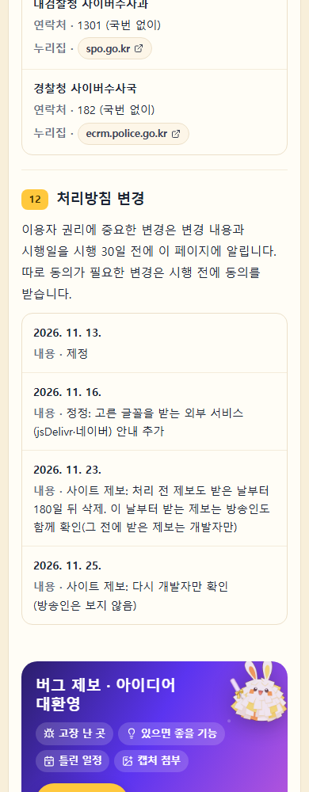
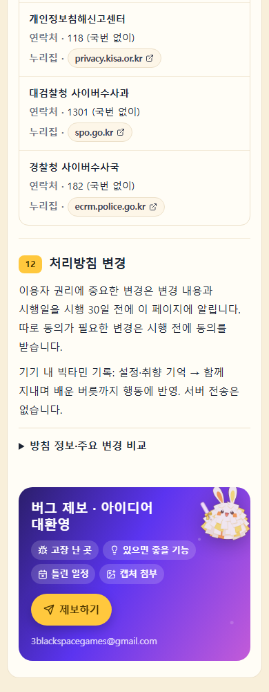
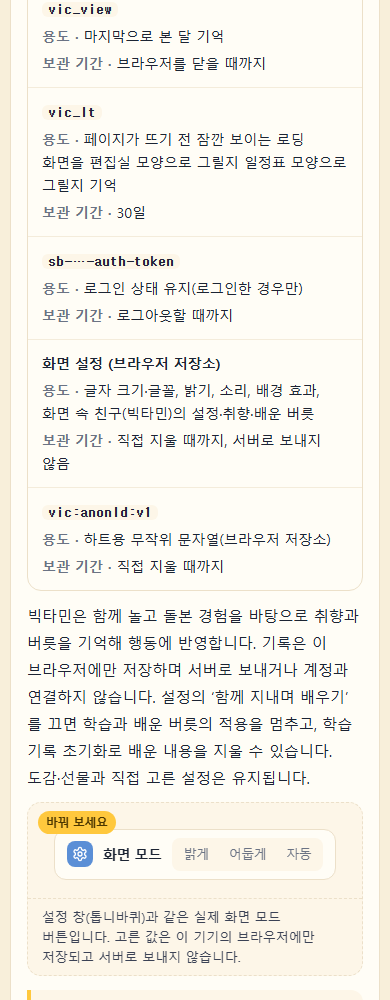
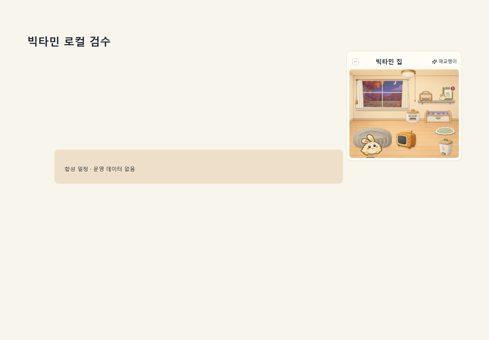

변경 안내 · 1440px


기준: origin/main 742de77b. 별도 작업 브랜치의 로컬 구현이며 배포하지 않았습니다. 기존 설정·돌봄·취향·도감·선물을 보존하고 추가 버릇은 별도 기기 내 기록에 저장합니다. 연합학습·계정 연결·개인화 업로드·새 동의창은 없습니다.
아래 그림은 같은 크기·밝은 테마의 실제 생산 빌드 SSR 문서를 로컬에서 렌더한 것입니다. 테스트 서버 없이 정적 문서의 스타일과 기본 접기 동작을 확인했습니다. 앱 전체 hydration 검사는 아닙니다. 아래 별도 빅타민 검수는 실제 React 컴포넌트를 합성 화면에 올려 실행했습니다.





같은 합성 화면·밝은 테마·크기, 같은 키보드 쓰다듬기 직후입니다. 전: 기준 커밋 742de77b의 실제 소스. 후: 현재 구현. 무작위 움직임의 위치 차이는 개선 점수로 해석하지 않습니다.


연속 38.406초·193회 관찰. 실제 그림·자세·위치 변화, 키보드 교감과 집기·옮기기, 학습 OFF, cat/dog 학습 제외, 초기화 후 도감·기질 보존, 재접속을 확인했습니다. 별도 고정 위치 QA에서는 실제 마우스 연속 쓰다듬기가 긴 교감(+0.065), 짧은 키보드 교감은 짧은 교감(-0.065)으로 기록됐습니다.
타입·lint·생산 빌드, 전체 단위 489파일·7,482건 전부 통과. 방침 접기는 포인터·Enter·Space로 확인했습니다. 개인화 기록은 로컬에 머물고 새 전송·계정 연결·동의창을 추가하지 않았습니다. 브라우저 네트워크 검사는 기존 자동화 방어를 유지했습니다.
harness 전체는 기존 실패: 기준과 현재 규칙 ID 목록이 동일하지만 등록표가 이미 어긋나 있으며, 변경하지 않은 아트 입력에서 문서 46건 드리프트가 남습니다. 이를 이번 작업에서 일괄 재생성하지 않았습니다.
실제 Next 앱 hydration·라우터·전체 화면·실제 로그인/RLS·장시간 전 성격 검수, 독립 비작성자 검수는 이번 오프라인 결과로 증명하지 않습니다. 커밋·통합·푸시·배포 전입니다.